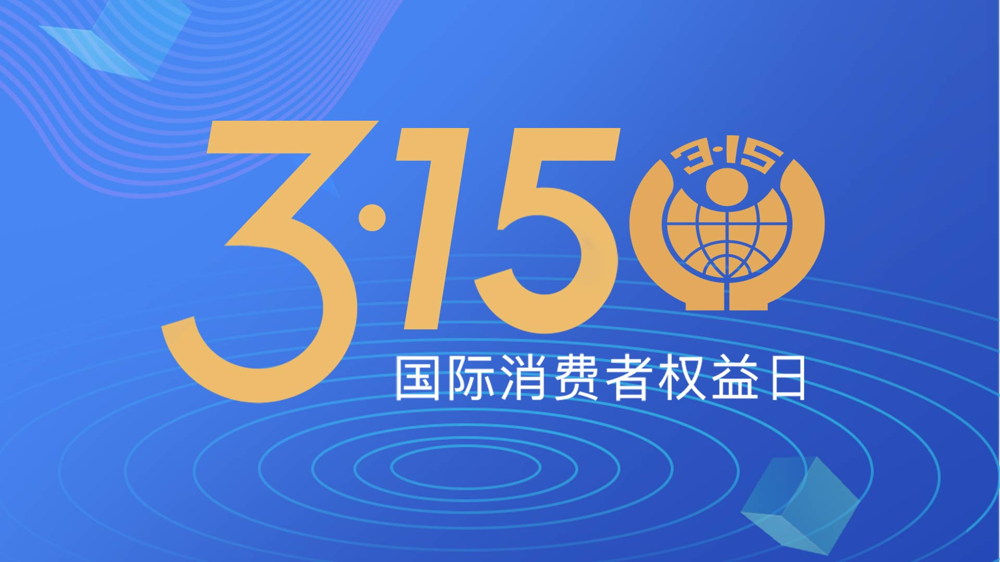

2021 年第一季度总结
这里记录下第一季度自己的一些想法，为了日后翻阅方便！
- 一月
- 世界尽头与冷酷仙境
- 垂直方向的努力
- 你到底获取到了什么信息
- 二月
- 不要把时间浪费在别的地方
- 有做自己命运主人
- 三月
- 做最好的自己
- 我想让社会变得更好
一月
希望新的一年，世界能比去年和平些！
新年不知不觉的到来了，但是新冠疫情明显还是有余温，并没有就此消除掉。虽然相对来说，国内的疫情控制的已经非常好了，而且对于的防护设备也有了一定的补给，并不会为购买口罩、消毒液之类的东西发愁了。但是随着气温的降低，以及过年人口大量的流动，势必防控措施还是面对着艰巨的困难的。希望，2021 有新的气象，好好生活！
一 世界尽头与冷酷仙境
有些事情需要思考，有些事情需要记住，有些事情需要进步！
日本作家村上春树有一本小说，叫做《世界尽头与冷酷仙境》。我觉得，这个书名非常好，可以用来形容今天的世界。
资本主义发展到今天，已经有一种世界尽头的感觉，除了不断印钱刺激经济，政府也找不到好的办法解决各种问题。但是，新技术革命正在创造一个个神话般的技术奇迹，又让人觉得这是一个仙境，但对于大多数人来说，这是一个冷酷仙境，改变不了自己的命运。
二 垂直方向的努力
有些事情需要思考，有些事情需要记住，有些事情需要进步！
挪威和孟加拉是两个截然不同的国家，但是它们有一个共同点：渔业都是两国的主要产业，很多人以打渔为生。挪威渔民非常有钱，挪威是世界上最富裕的国家之一，而孟加拉国属于世界最贫穷的国家。虽然也有国家给孟加拉国赠送了现代化渔船，作为援助，但是已经无法提高生产力。
究其原因就是，这些现代化渔船就无法使用了，援助行动以惨败告终。孟加拉渔民缺乏相应的知识和技能，无法操作挪威渔船，同时也缺乏进行维修的基础设施和零配件，没有任何学校教渔民怎么修理这些船。现代化设备在孟加拉渔民手里，很多功能发挥不出来，出海遇到故障，只有眼睁睁看着整艘船坏掉。
这个道理放到人的身上，也是一样的。 人与人的收入不一样，原因不是甲比乙更努力，而是很多外部因素综合起来的结果。 甲拥有的资本、技能和环境条件超过了乙，使得甲所在的层次高于乙。一个餐厅服务员，无论怎样努力，收入恐怕都不会超过基金经理，道理就在这里。这告诉我们，如果你想真正地提高收入，努力仅仅是一部分的因素，更重要的是，你必须设法提升自己的资本、技能和环境的层次。所以，你需要的不是”水平方向的努力”，而是”垂直方向的努力”。—— 阮一峰《提高收入的根本途径》
三 你到底获取到了什么信息
有些事情需要思考，有些事情需要记住，有些事情需要进步！
现在很多人都在鼓吹碎片化学习，比如上班坐地铁可以看技术文章。感觉现在在互联网上能接触到海量信息，在碎片化时间里也能够学到东西。
但实际上往往看的都是别人的花边新闻、毫不相干的事件、支离破碎的感悟观点，然后这些片段变成了自己的谈资，久而久之自己就产生假象觉得自己懂得不少。剔掉这些膨胀的假象心理意识，可能只剩下苍白，浪费了时间，还得从头学起。—— 《2Gua》
是的，借着碎片化学习的头衔，看的是抖音、快手等各种短视频，看的是各种不靠谱的微信公众平台上面的文章，其实获取的知识并不够体系。今天看一点这个，明天看点那个，虽然都会在脑子形成一个大致的概念，但是等到需要用的时候，还是得从头学习，还要翻看书籍。所以，还是要从实际情况出发，去除浮躁的内心，静下来，慢慢思考下吧！
二月
复工，开始新一轮的搬砖之旅。
今年的春节感觉放假的时间感觉好短呀，本来因为疫情几乎挡下了 90% 以上的走亲戚时间，就这感觉没有休息几天，就又开始上班了。是不是越长越大，时间就过得越来越快呢？
一 不要把时间浪费在别的地方
有些事情需要思考，有些事情需要记住，有些事情需要进步！
今天在 Twitter 上面看到池老板发的这样一条动态：「人生的大部分是用来寻找那些最需要你的人和事，不要把时间浪费在别的地方」。
看了之后，我心里还是多少有些触动，道理其实我们都懂，但是人在江湖，身不由己！想想自己的一生，确实应该这样度过，但是一切都是需要建立在自己力所能及的基础上。就好比，我想要去看电影，但是我必须先填饱自己的肚子。但是，当填饱了自己的肚子之后，我们可能也不愿意花这个钱去看电影了，多买两个馒头不香吗！
但是，有说话来，我们确实有太多的桎梏，是自己加给自己的。我们总是把简单的问题给复杂化，告诉自己不能这样做，不能那样做，到最后只是留在原地来回踱步而已。其实，当我们迈出了第一步，后面的路应该怎么走，那就是后面我们需要考虑的事情。
我现在思考问题总结了下，就是：先缕清思路且考虑全面之后，列出可以选择的解决方式，考虑利弊和自己是否可以接受与之相应的后果，然后干就完了。
二 有做自己命运主人
有些事情需要思考，有些事情需要记住，有些事情需要进步！
这个故事真正打动我的地方，不是他选择哪一条道路，而是他敢于去选择，不跟现状妥协。 那一种自己把握命运的主动性和勇气，我不能这样过下去，这不是我要的路，我必须改变人生的方向，然后毅然决然付诸行动。
太多的人缺乏这种勇气，让生活推着自己往前走，随波逐流。一个青年高中毕业，对自己、对社会都不太了解，选择大学专业都是听父母的，等到发现没有兴趣的时候，不知道该怎么办，往往选择先拿到文凭再说，得过且过。没有那种对命运负责的勇气和壮士断腕、破釜沉舟的行动力。
在中国，想要违逆命运安排好的道路，难度是极大的。周浩的退学是一个罕见的真实例子，拒绝命运的安排，听从自己的内心，做一个人生的逆行者。希望这个故事，能让更多的青年有做自己命运主人的勇气。(PS: 转自阮一峰的博客)
三月
叶梦蝴蝶，忽醒，起追蝴蝶，不得！
三月份正式全面复工了，久违的网友终于见面了。随即就思考了，远程工作和传统上班方式的思考。咳咳咳，也只是想想而已。

一 做最好的自己
有些事情需要思考，有些事情需要记住，有些事情需要进步！
只要运动，你就一定会受伤！
只要做事，你就一定会犯错！
只要推动事，你就一定会得罪人！
只要有观点，你就一定会被人骂！
只要你不世故，就一定有人来教育你！
只要你有成绩，就一定有人说长道短！
这个世界从来不缺阻止你的人，所以，你一定不要害怕和畏缩。唯有更多更果敢的行动和坚持，才有更灿烂的突破与绽放！
二 我想让社会变得更好
有些事情需要思考，有些事情需要记住，有些事情需要进步！
自从今年 3.15 晚会开始，基本每天回家都可以看到，关于社会上面不同侧面的报道，都是关于贪污、滥用职权、黑恶势力、毁坏环境、制假造假，等等。这不禁让我开始思考，我到底处在于一个什么样的环境中呢？
浙江省的某个小村中，村支书带头搞黑势力，用国家明文规定打压小型碎石场，然后自己组织人员炸山毁田，强行占用村民土地，强买强卖，并且导致几百户村民家中出现大小、多少不等墙体裂缝。村民集体上诉，等来的总是不了了事，无人问津。就这样的情况，持续了十几年，直到最近国家打击黑恶势力才得以正法。节目中报道了，十几年之间营收二十多亿元，自建组织成员别墅群，宴会厅，游泳池等。另外，除了村中黑势力之外，还逮捕了几十个包庇的政府公职人员。
另一档节目中，曝光了黑龙江哈尔滨电业局李氏兄弟贪污巨额财产，揭秘了三兄弟背后的黑恶势力“保护伞”。一个电业局副局长拥有上亿元私家豪车，劳斯莱斯、宾利、悍马、限量版克莱斯勒猎兽、限量版老爷车光冈女王，上百辆豪车总价值近亿元，这不是车展，这些车都是哈尔滨市电业局原副局长李伟的私家资产。清代蓝底蟒袍、清代雍正年制黄地绿彩龙纹菱口盘、乾隆年制粉彩花卉大碗、石釉粉彩花瓶，这不是清宫藏品展览，而是哈尔滨电力实业集团公司原总经理李桐的个人藏品。除了豪车与古董，李氏兄弟在松花江还有一处豪华码头。更让人惊讶的是，李氏兄弟拥有的房产数量多达 69 套。哈尔滨市纪委监委对 30 余名公职人员进行了立案审查调查，并督促电力系统对 64 名相关党员干部和公职人员进行问责。
还有很多很多，社会的问题，真的太多太多。我们只是这个社会的一个小小的螺丝而已，很多时候，我们根本没有感觉到社会真的出了问题。是的，有问题就应该改正，这是一个连小学生都知道的事情。但是，在一个成年人的我看来，这确实一个非常非常难得问题，难道让我数清楚自己身体总共有多个细胞一样。
社会真的病了，但是却没有一副药可以治好，因为并发症太多了。积重难返，病入膏肓！可是，我还是希望可以为社会做一些贡献！发光发热，燃烧自己！